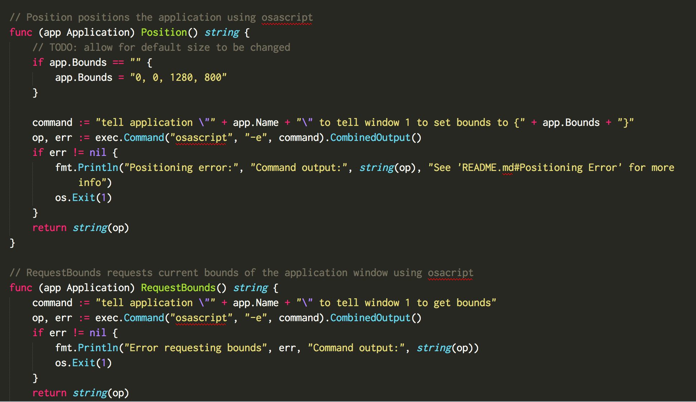
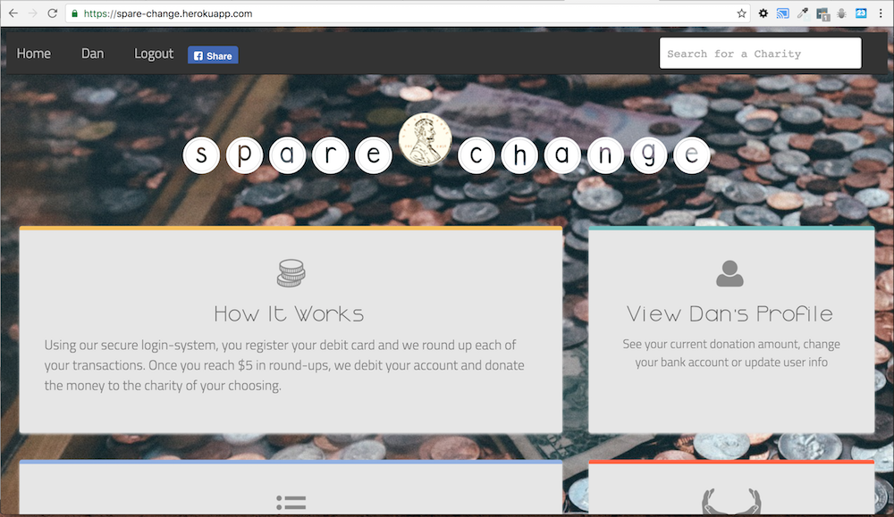
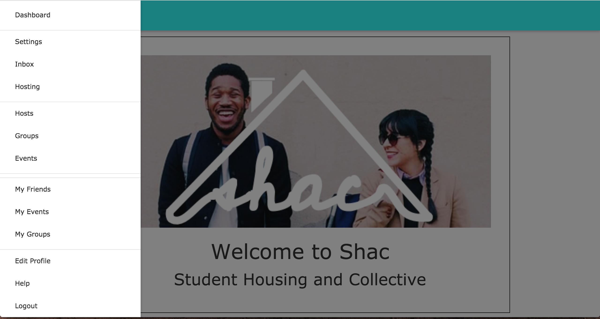

I am a software engineer who loves learning and creating, and I'm passionate about helping others do the same. Making websites allows me to create something that will affect people's lives in positive ways while also learning new things each day. Coming from teaching high school math, coding is how I keep the analytical part of my brain occupied while satisfying the need to solve a good puzzle.
Stagehand (Github link): A CLI tool that allows users to position applications on their screen using a user-created yaml file. Written in golang and currently in active development
Team Lead on spareChange (Github link): a Rails web app built in 8 days which allows users to round up each transaction to the nearest dollar and donate that amount to a charity of their choice.
Shac (Github link): Followed client specifications to build entire app from the ground up in 24 hours. Built for a hackathon put on by Shac, this entry won first place.
Shac is web-app that helps students connect and sleep closer to campus. Students can choose to host other students or "crash" at a host's house/apartment/dorm then, the "crasher" can offer to exchange things such as walking the host's dog or buying the host coffee as a thank-you for allowing them to stay.
Orghunter Gem (Github link): A gem that wraps the OrgHunter API. I began building this as a way to learn about gem development after graduating DBC. No longer in active development